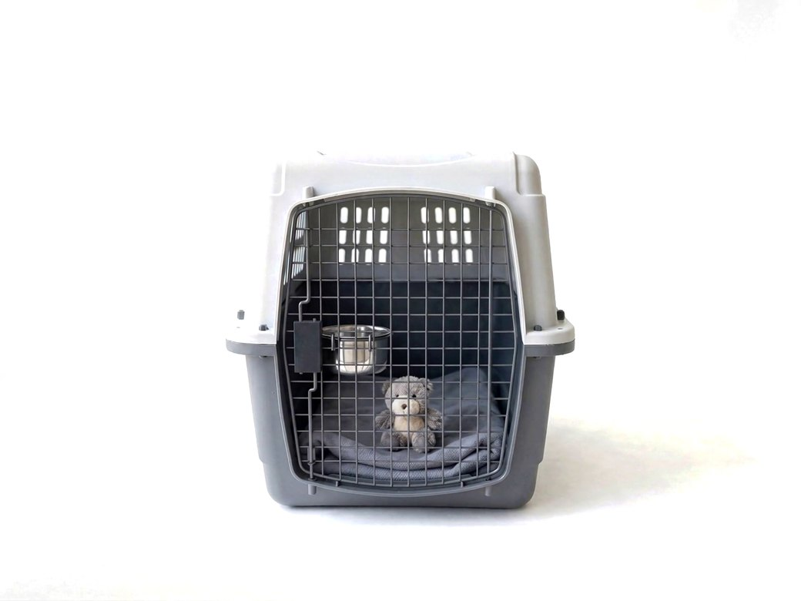
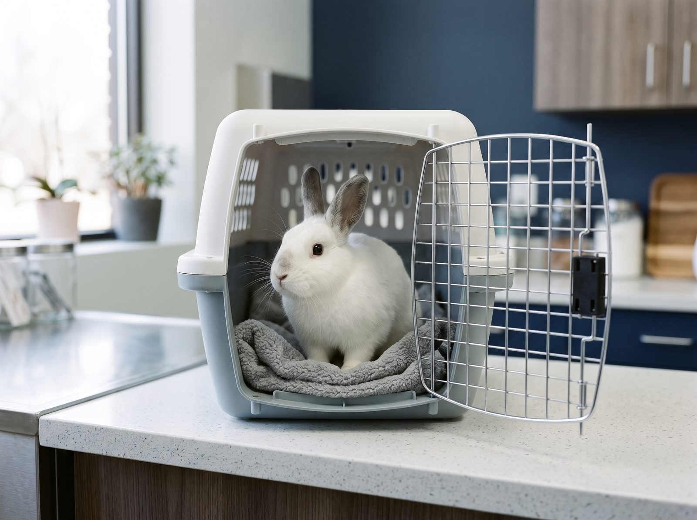
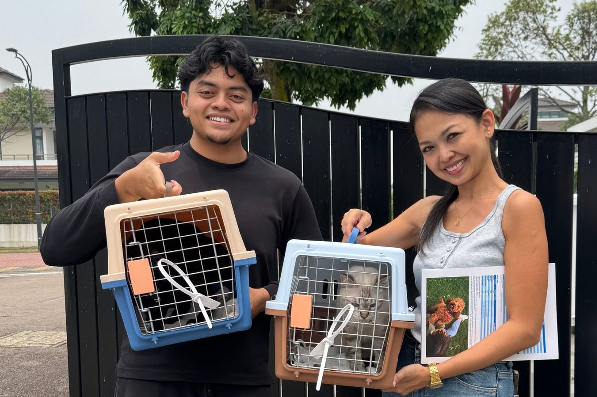

Your pet's paperwork can take longer than your move.
Six months or more, for some countries. Here's why
It's a chain, not a form.
Every step has a date it must come after, and some have a date they expire. Get the order wrong and the steps after it may not count.
It all starts with a microchip.
Every step after it begins with a scan.
Example dates for a dog or cat flying to Japan on 1 June 2027, starting today, 28 October 2026.
by 2 November 2026
Microchip
Always first. For the UK and Japan, a rabies vaccine given before the chip doesn't count.
by 2 December 2026
Rabies vaccination
Then a wait before the next step counts. The UK needs 21 days. Japan needs a second dose at least 30 days after the first.
by 3 December 2026
Rabies blood test, where required
Taken weeks after the vaccine, at an approved laboratory. Results can expire: Singapore only accepts a sample taken within 12 months of export.
180 days
The long wait
Some countries count from the blood test before your pet may enter: at least 90 days for Singapore, 180 days for Japan.
from 22 May 2027
Final health certificate
Issued in the last days before travel: within 10 days for the UK, 2 to 7 days before export for Singapore.
Start too early and some documents expire before you fly. Start too late and the waiting periods push your pet's date past yours. We plan the chain backwards from your departure date.
Weeks, months, or not directly.
It depends on where you're going, your animal, and what has already been done. Four examples from Malaysia:
United Kingdom
Weeks21 days after the rabies vaccine
Microchip, rabies vaccine, a 21 day wait, a Nipah virus test within 10 days before the flight, and a health certificate issued within 10 days of arrival. No rabies blood test. Dogs also need tapeworm treatment 1 to 5 days before arrival. Flights must use an approved route, and pets usually fly as cargo.
Singapore
MonthsAt least 4 months from the vaccine to export, then 30 days in quarantine
Rabies vaccine, a blood test at least 28 days later, then at least 90 days from the blood sample to export. An import licence, and 30 days in quarantine on arrival.
Quarantine space is in high demand. In our experience, a slot for a cat can take 3 to 6 months to come up, so book early.
Japan
MonthsAbout 7 months from the first vaccine
Microchip, two rabies vaccines at least 30 days apart, a blood test, then 180 days before arrival. Japan needs notice at least 40 days before arrival. Miss a step and quarantine can last up to 180 days.
Australia
Not directlyAustralia has not accepted dogs and cats directly from Malaysia since 12 March 2020. Your pet must first be prepared in a country Australia approves.
That adds months. We tell you this at the start, not after you've paid.
Going somewhere else? Most destinations sit between these. Send us yours.
The free eligibility assessment
Tell us where you're going and when. We check your pet's timeline and tell you, plainly, whether your pet can go with you.
If it can't be done in time, we'll say so, and tell you what your options are. That's what the assessment is for.
It's free. Whether you use FUGR afterwards is up to you.
What you send us
- Destination country and city
- Planned departure date
- Your animal: species, breed and age
- Microchip and vaccination records, if you have them. A photo is fine.
What you get back
- A verdict: possible in time, possible if you start by a certain date, or not possible in time, with your options
- The steps for your destination, in order, with dates worked back from your departure
- A check of your airline's own rules for your route
- What you need to do, and what we handle
One team owns the whole chain.
Most people end up coordinating a vet, an airline, a permit office and a deadline on their own. With FUGR, one team owns all of it and gives you the dates.
- Malaysian permits and documents handled, and clear steps for what your destination needs, so nothing is missing at either border
- Vet appointments in the right order, so no vaccine or test has to be done again
- Rabies blood tests at approved laboratories, so the result counts where you're going
- Airline and route rules checked against your booking, so your pet isn't turned away at check‑in
- A dated plan to share with your employer, relocation agent or family, so everyone knows what happens when
Services we've used

Your pet may fly as cargo.
We never treat it like cargo.
A word from our founders
The founders of FUGR
We're the two founders who run FUGR in Johor Bahru, together with the people who work with us on each move. Every one of them loves animals.
One of us has spent years moving pets between countries, and knows where these moves usually go wrong. The other has years of operations experience in the pet industry and beyond, and now builds the plan for each move and makes sure every step happens on its date.
What you get from us is simple: a dated plan before you commit, and a straight answer if the timing won't work.
Rabbits, birds, reptiles and other species
Many relocation services only handle cats and dogs. Small animals and exotics often need extra permits, and some breeds and species can't enter some countries at all, whatever the paperwork. Tell us the species and the destination, and we'll tell you early whether it can travel.
Ask about my animal (opens WhatsApp)
Bringing a pet into Malaysia?

Moving to Johor, or anywhere in Peninsular Malaysia, from Singapore? We collect your pet in Singapore, sort out the Malaysian import paperwork, and drive your pet across ourselves, door to door. We'll tell you what Singapore needs from you before your pet leaves.
A dog or cat entering Peninsular Malaysia needs an import permit from the Department of Veterinary Services, and a check by a government vet on arrival.
Coming from somewhere else? Ask us. The rules depend on the country your pet is leaving.
Questions people ask
When should I start?
As soon as you know where you're going. If your destination needs a rabies blood test, that can mean six months or more before you fly.
Can you guarantee my pet will be cleared?
No one honestly can. The final decision belongs to the destination's authorities. What we do is make sure every step we're responsible for happens in the right order, on the dates in your plan.
Will my pet be okay?
We plan the move around the animal: vet visits spread across the timeline instead of crammed into the last week, a travel crate that meets the airline's live animal rules, and advice on getting your pet used to it well before travel day.
Do you book flights?
No. We check the airline and route rules that apply to your pet, so the flight you book works.
How much does it cost?
It depends on the destination, the animal and how much time is left. We quote after the assessment, once we know what your move involves.
Is the assessment really free?
Yes. Whether you use FUGR afterwards is up to you.
Find out if your pet can fly with you.
Send your destination and departure date on WhatsApp. The free eligibility assessment tells you whether it can be done in time.